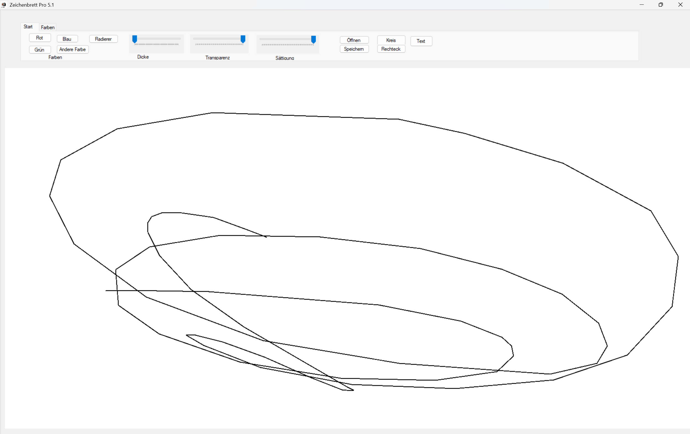

Zeichenbrett Pro: Download und Infos
Infos und Download
Mit Zeichenbrett Pro könnt ihr tolle Kunstwerke malen.
Es wird eine Setupdatei heruntergeladen , die zum starten sehr lange dauern kann , bitte haben sie Geduld. Wir übernehmen keine Garantie, dass das Setup bei ihnen funktioniert. Es funktioniert sehr unzuverlässig.

Zusatzinformation:
Die Geschichte von Zeichenbrett - Eine kurze Zusammenfassung
Unser erstes Programm war Zeichenbrett - wir überlegten lange, wie wir es nennen sollten, aber Zeichenbrett setzte sich durch. Wir arbeiteten lange daran und waren sehr zufrieden, bis wir eines Tages im Sommer auf die Idee kamen, unterschiedliche Versionen für Zeichenbrett anzubieten, Zeichenbrett Dev war für Entwickler angepasst, Honas arbeitete an ihm und Zeichenbrett Beta für Zeichenprofis, Simon war der Entwickler. Außerdem planten wir zeichenbrett Canary, das aber nie wirklich verwirklicht wurde. Gesagt, getan, schon waren die unterschiedlichen Editions online - aber zugegeben, ein paar Monate nahm die Entwicklung schon in Anspruch. ein Jahr später war schon eine richtige Konkurrenz da, damals wurde das gsnze in TurboWarp gebaut. Jeder wollte das bessere und komplexere Projekt führen. aber dann kamen wir auf die Idee, dass es gut wäre, wenn wir Zeichenbrett dev und Beta wieder vereinen würden. Und das taten wir dann auch, zwei Tage später gab es die erste Vorabversion von Zeichenbrett Pro!Jonas programmierte es in C# mit Winforms und wir planen es mit WinUI erneut zu schreiben um die Oberfläche zu modernisieren ---von Jonas
Programm erstellt von Jonas (2025), hochgeladen von Simon (2025), Text geschrieben von Jonas (2025)